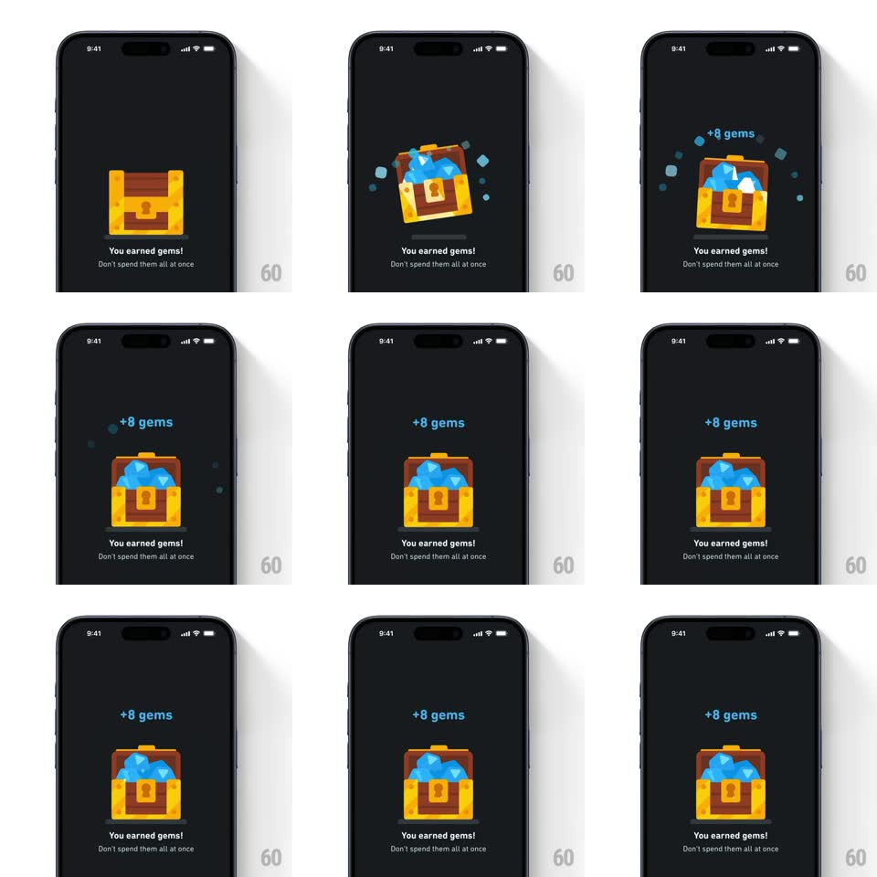

Media
Frame-by-frame

Rebuild this interaction 1:1: Duolingo's earned-gems reward - a closed treasure chest wiggles, bursts open with gems and sparkling shards flying out, settles brimming with blue gems, and a "+8 gems" label pops in above it.

Rebuild this interaction 1:1: Duolingo's earned-gems reward - a closed treasure chest wiggles, bursts open with gems and sparkling shards flying out, settles brimming with blue gems, and a "+8 gems" label pops in above it. ## Integration Integration: stack-agnostic spec - springs given as stiffness/damping, timed motions as duration + curve; map every value to your framework and animation library of choice. ## Scene Dark screen: a centered cartoon treasure chest over "You earned gems!" and "Don't spend them all at once." ## Motion spec Pattern: anticipation-wiggle then burst reward. - Wiggle: the closed chest rocks in place (rotate +/-7deg, 3 cycles, ~600ms total), anticipation style. - Burst: the lid flips open (rotate -70deg around the back hinge, 250ms, ease-out) as gems and shards explode upward (~10 pieces, random velocities, 500ms, gravity pull-down); a brief white flash (100ms) fires from inside. - Settle: the chest lands open, brimming with gems (300ms); two small sparkles twinkle at the gem pile (opacity pulses, 1.2s loop). - Label: "+8 gems" pops in above the chest (scale 0.5 -> 1.15 -> 1, spring ~340/18, 350ms, staggered 150ms after the burst). ## Calibration - The explosion pieces fly outward and fade - none remain on screen after the settle. - Text under the chest never moves; only the chest and the label animate. ## Reduced motion Chest crossfades closed -> open (250ms); the label fades in. ## Don't miss - The wiggle happens while the chest is still closed - the pause before the payoff. - The gem count label is blue and chunky, matching Duolingo's gem currency styling.